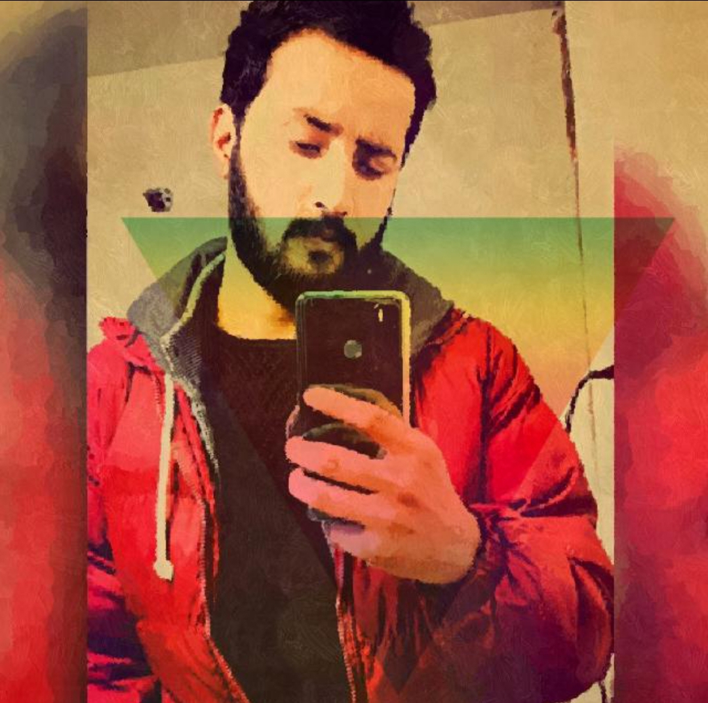

Bold and fearless content creator exposing the reality of India vs Pakistan across cities, infrastructure, lifestyle, and public behavior.

0
0
0
Farhan is a bold and fearless content creator who focuses on real comparisons between Pakistan and India across cities, roads, infrastructure, lifestyle, and public behavior. Unlike many so-called celebrities and family vloggers, he shares opinions without fear. He is not driven by fame or views, but by a clear mission — to present reality and highlight differences. Through his content, he discusses roads, railways, airports, civic sense, food, hospitality, and national systems. His audience supports him because he represents confidence, honesty, and a strong point of view.
Farhan examines airport facilities, highlighting differences in management, efficiency, and traveler comfort between India and Pakistan.
Watch VideoExploring hospitality trends, showing service quality, friendliness, and local culture differences across both countries.
Watch VideoHe dives into cultural festivals, showing vibrancy, organization, and celebration differences between Pakistan and India.
Watch VideoLet's support Farhan in his mission to fully expose India’s reality while showcasing Pakistan’s strengths and systems.
YouTube ChannelIf you want a professional portfolio or business website like this, contact directly via WhatsApp below.
Message Umar